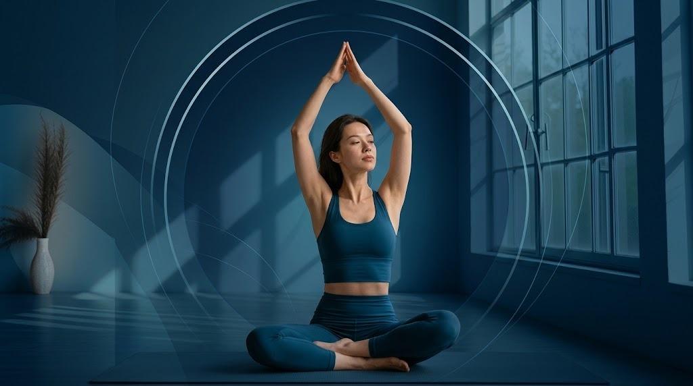
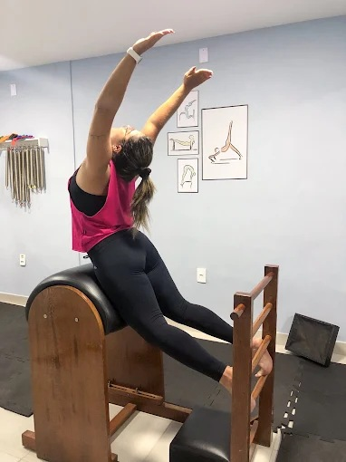
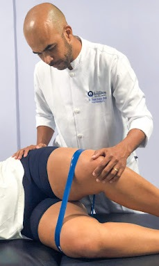
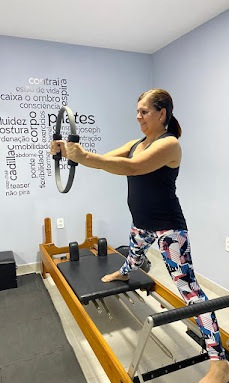
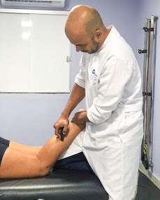
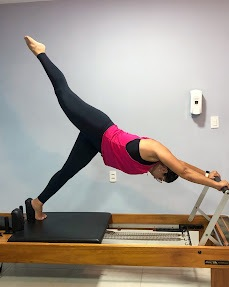
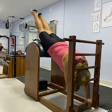
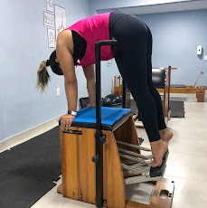
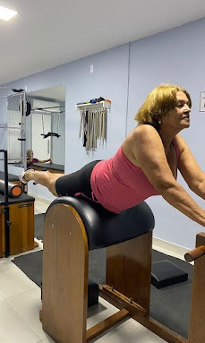

Reabilitação
para voltar a fazer o que você gosta
Do pós-operatório à lesão de treino: recuperação acompanhada de perto, no ritmo do seu corpo.
Eunápolis-BA · Fisioterapia e Pilates
Fisioterapia e Pilates em Eunápolis para tratar a dor, prevenir lesões e voltar a se mover com segurança.

No Studio Ângulos, fisioterapia e Pilates trabalham juntos. Primeiro entendemos a causa da sua dor, depois montamos o tratamento certo para o seu corpo.
Falar com o estúdiopara voltar a fazer o que você gosta
Do pós-operatório à lesão de treino: recuperação acompanhada de perto, no ritmo do seu corpo.
antes que a dor vire lesão
Postura, mobilidade e força trabalhadas cedo, para o corpo aguentar a sua rotina sem reclamar.
mais disposição no dia a dia
Menos dor, mais autonomia e energia para trabalhar, cuidar da família e se mover sem medo.
Aparelhos de Pilates, atendimento individual e um ambiente acolhedor para você se cuidar com segurança.








Fisioterapia e Pilates para cada fase, da dor do dia a dia à recuperação de uma cirurgia. Toque em um atendimento para saber mais.
Fisioterapia esportiva e ortopédica
Para quem treina e para quem sente dor ao se mover. Avaliamos o seu movimento, tratamos a dor e a lesão e planejamos o retorno ao esporte e às atividades com segurança.
Cada plano parte da avaliação: entendemos o que originou o problema e escolhemos as técnicas e os exercícios certos para você.
Reabilitação pós-cirúrgica
A recuperação depois da cirurgia começa no tempo certo e segue a orientação da equipe médica. Trabalhamos dor, inchaço, amplitude de movimento e força, de forma gradual.
Você acompanha a evolução a cada etapa e volta às atividades do dia a dia com mais confiança.
RPG, escoliose e quiropraxia
Para dor nas costas, desvios e a postura que cobra a conta no fim do dia. Trabalhamos a causa com técnicas de correção postural e terapia manual.
A reeducação postural global (RPG) alonga e reorganiza o corpo como um todo, e não só o ponto que dói.
Fisioterapia para idosos, artrite e terapia ocupacional
Atendimento pensado para manter independência, equilíbrio e conforto nas articulações, com mais autonomia nas atividades do dia.
A terapia ocupacional ajuda a adaptar tarefas e rotinas para que o corpo trabalhe a favor da pessoa.
Fisioterapeuta domiciliar
Quando sair de casa é difícil, o atendimento vai até você. A avaliação e o tratamento acontecem no conforto do seu lar, com o mesmo cuidado do estúdio.
Chame no WhatsApp, conte a sua necessidade e informe a região para combinarmos o atendimento.
Pilates terapêutico e nos aparelhos
Quando o exercício vira tratamento. Aulas nos aparelhos, como reformer e cadillac, com movimentos escolhidos para a sua dor, a sua lesão e o seu ritmo.
O acompanhamento de fisioterapeuta permite adaptar cada exercício e evoluir com segurança.
Dor, rigidez e cansaço são avisos. Tratar cedo evita que eles virem limitação.
Tratamos a origem do problema, não só o sintoma, para o alívio durar.
Movimentos que ficaram travados voltam a ter amplitude, com controle.
Músculos fortes e bem coordenados protegem articulações e coluna.
Subir escadas, carregar peso, brincar com os filhos: voltar a fazer sem medo.
Avaliações reais de quem já foi atendido no estúdio, direto do Google.
Excelente atendimento, Dr. Daniel sempre me salva quando estou com dor! 🙌🏻
Ótimo profissional o fisioterapeuta Daniel. Recomendo.
É ótimo! Adoro a equipe, o ambiente, os aparelhos. Amo Pilates.
Todos muito simpáticos, na recepção dispensa comentários, pessoa maravilhosa e atenciosa, profissionais dedicados e prestativos.
Ótimo atendimento! Resultados excelentes!!
Incrível! Clínica aconchegante e profissionais extremamente capacitados. Recomendo!
Garantia certa de um resultado esperado !!! Parabéns pela qualidade no serviço e no atendimento também!!!
Três passos, sem complicação.
Conte onde dói, há quanto tempo e o que você quer voltar a fazer. Combinamos o melhor horário.
Avaliamos postura, movimento e histórico para entender a causa da dor e definir o plano.
Fisioterapia, Pilates ou os dois, no seu ritmo, com acompanhamento de perto até você ter alta.
Não. O Pilates serve tanto para tratar dores quanto para prevenir e melhorar postura, força e flexibilidade.
Pode, e é para isso que o Pilates terapêutico existe. Na avaliação, adaptamos os exercícios à sua condição. Se você tem laudo ou orientação médica, traga para a consulta.
Pode. Você aprende os movimentos com acompanhamento e começa no seu nível, sem precisar de experiência ou flexibilidade.
A fisioterapia avalia e trata a dor ou a lesão. O Pilates fortalece e mantém o corpo funcionando bem. Muitas vezes os dois caminham juntos, e a gente indica o que faz sentido para você.
Sim, temos fisioterapia domiciliar. Chame no WhatsApp, conte a sua necessidade e combinamos região e horário.
Atendemos de segunda a quinta, das 8h às 20h, e na sexta, das 8h às 17h. Chame no WhatsApp ou preencha o formulário abaixo e marcamos a sua avaliação.
Conte um pouco sobre o que você sente. Respondemos pelo WhatsApp.